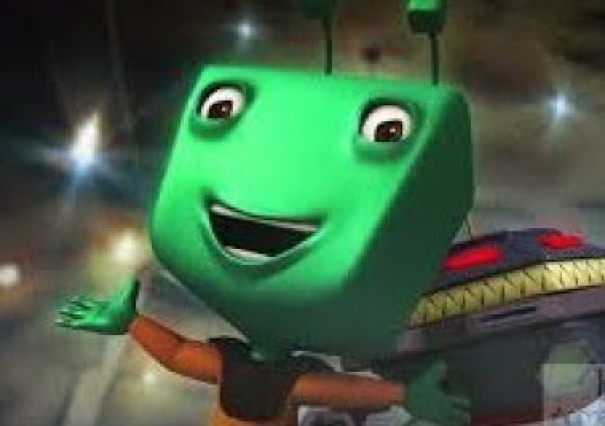
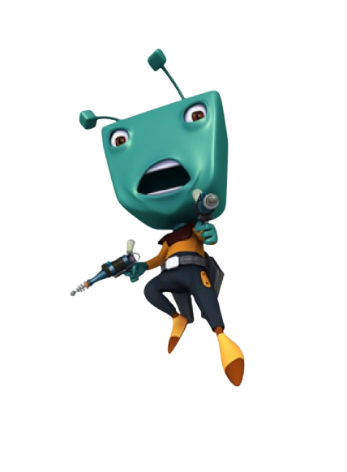
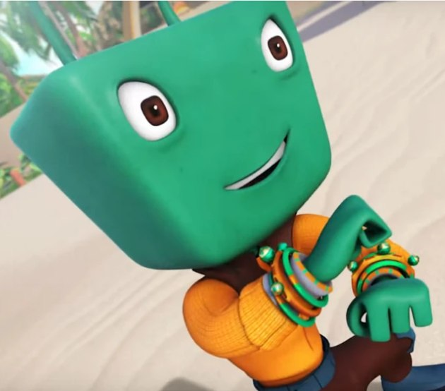
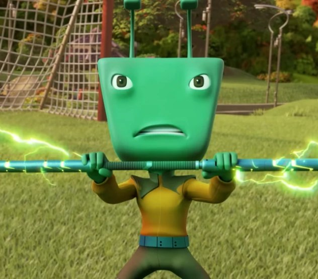
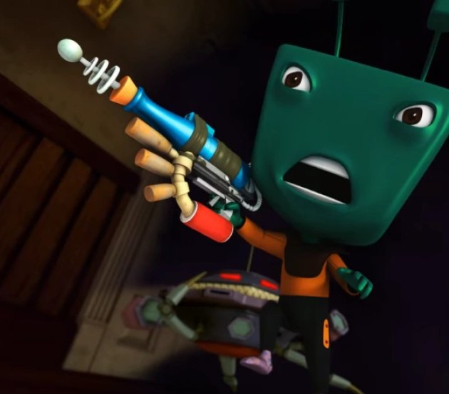

.png)
ADU DU
Adu Du is a clumsy alien who tries to conquer Earth and steal power spheres. He is the show's main villain but is often funny because his plans always fail.
MORE INFOAdu Du is a clumsy alien invader from the planet Ata Ta Tiga who serves as a primary antagonist in the BoBoiBoy series. His main goal throughout the franchise is to conquer Earth and steal valuable Power Spheres, though he rarely succeeds. His character is defined by his persistent but ultimately failed schemes, which often lead to humorous situations.
Accompanying him in his missions is his loyal, albeit frequently misused, robot assistant, Probe. The dynamic between Adu Du and Probe is famously dysfunctional, serving as a major source of comic relief throughout the show. Despite his villainous aspirations, Adu Du is rarely portrayed as a purely threatening figure; his incompetence and lack of coordination make him more of a comedic foil to the heroes than a terrifying threat.
Over time, his role has evolved, but he remains best known for his signature green appearance, his tendency to blame others for his mistakes, and his endless supply of erratic inventions designed to aid in his quest for power. His ongoing, unsuccessful attempts to defeat BoBoiBoy and his friends keep him at the center of many lighthearted conflicts, cementing his status as one of the series' most iconic and memorable characters.

CHARACTER REVOLUTION

Original Series Look
This reflects Adu Du's classic appearance from the early BoBoiBoy series, showcasing his iconic square green head and his villainous determination as the group's main antagonist.

Galaxy Series Look
This represents his updated BoBoiBoy Galaxy appearance, featuring a more polished, high-detail digital art style that aligns with his character's evolution while maintaining his recognizable comical charm.
VOICE ACTOR
Anas Abdul Aziz is a multi-talented creative force at Monsta, the studio responsible for the BoBoiBoy franchise. He is widely recognized for his performance as the iconic antagonist, Adu Du, a role he has brought to life with a distinct, high-pitched, and comedic vocal style that has become instantly recognizable to fans.
His contribution to the series extends far beyond his work as a voice actor. As a key member of the creative team at Monsta, he has served as both a writer and a director for the franchise. This dual role has allowed him to influence not only how the character sounds, but also how he is written and portrayed on screen. His deep involvement in the production process has been instrumental in shaping Adu Du’s character arc, guiding him through his evolution from a serious, primary antagonist during the early days of the series into the beloved, bumbling comedic staple he is today.
By balancing the duties of a voice performer with those of a storyteller and director, Anas Abdul Aziz has played a fundamental role in the long-term success and character depth of the BoBoiBoy universe. His work ensures that Adu Du remains a central, entertaining, and essential part of the show's enduring legacy.
ADU DU STRENGTH
Adu Du is a clumsy alien invader capable of scheming to conquer Earth, building erratic technological inventions, and commanding his robot assistant Probe. His primary function is antagonist and comedic relief, but he possesses significant persistence and ambitious villainous aspirations.
ADU DU WEAPONS


